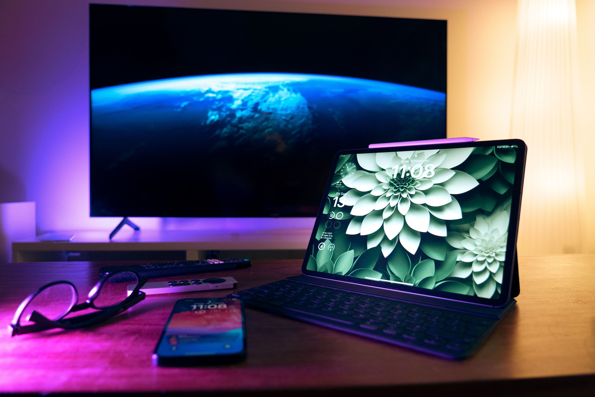

MY PERSONAL PORTFOLIO

BEYOND BORDERS: THE IDEA
I wanted my portfolio to feel like a story visitors can explore, rather than a static resume. Each page reveals a different part of my world from personal reflections to small coding experiments.
Starting with the Space Science template, I replaced the original material, reshaped the layout, and created my own visual identity with dark navy backgrounds, violet accents, and personal photography.
WHY I DESIGNED IT THIS WAY
The navigation keeps every chapter within reach: About Me for personality, My Life for experiences, and Projects for things I am learning to build.
Rounded photographs, soft glows, and subtle hover movements help create a consistent atmosphere without distracting from the writing.
THE FEATURES BEHIND THE DESIGN
HTML connects eight pages and gives each section a clear purpose, from project cards to the contact form.
CSS transforms the original template into a responsive navy-and-violet layout, with controlled image sizes and custom navigation styles.
JavaScript powers a time-aware welcome popup and a study planner that calculates daily study time from the hours and days a visitor enters.
DESIGN CHALLENGES I SOLVED
Some of my high-resolution photos initially overwhelmed the layout. Controlling width, height, and object-fit taught me why responsive design requires more than choosing attractive images.
I also learned that an apparently small change like a link or a shared CSS rule can affect several pages, so consistency and careful testing matter.
WHAT I WOULD ADD NEXT
Next, I want to simplify overlapping CSS rules, refine the smallest screen layouts, and add more interactive demos so visitors can try the projects instead of only reading about them.
BACK TO PROJECTS